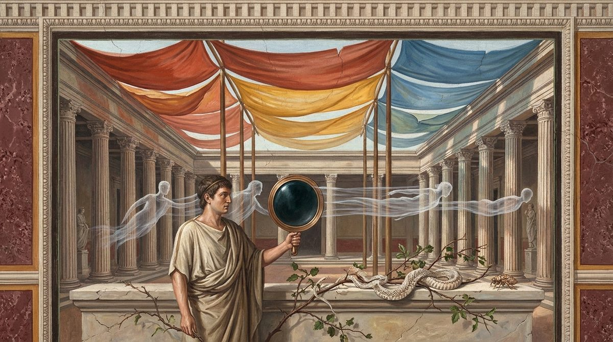

De Rerum Natura · on the nature of things
The poet's untrodden path again; the images, thin films shed from the surface of things, their fineness, their speed and their kinds; sight, mirrors and the deceptions of sight, which are the mind's error and never the eyes'; the senses as the ground of all truth, against the sceptic; hearing, echo, taste and smell; how the mind thinks and dreams, and why dream-figures seem to move; the limbs were not made for their uses; hunger, walking and sleep; the dreams of men and beasts and of desire; the passion of love, its madness, its waste and its cure; and the shared pleasure, inheritance and fertility of the sexes.
The text followed is the printed Perseus text, as in Books 1 to 3. Three gaps are marked and left unfilled, after 126, after 144 and after 289. The book's opening is not in order: 26-32 and 33-37 are two drafts of the same transition, each ending in the same two lines, and 45-53 look like a leftover of an earlier version; the translation prints them in the printed order and repeats the English where the Latin repeats. Line 808 repeats 804 and breaks its sentence, 1000-1003 repeat 992-995 after a line lost before 999, and 1047 all but repeats 1034; all are rendered as printed, with a note at each. At 116 (eorum), 546 (barbara) and 823 the English follows the correction every editor makes; at 491, 547 and 551 it renders the printed text and the notes give the alternatives. As in Book 3 the transcription doubles a word wherever the original marked a diaeresis, so that "air" appears as aeraaëra, aeraër, aerisaëris and the like at some thirty places, and coepit, coercet and suerint are doubled in the same way (303, 369, 619, 647, 657); these are artifacts of the copy, read as the single word without notice.
Simulacra, the book's subject, is "images" throughout, as it was for the ghosts of 1.123 and the statues and pictures of Book 2, so that the technical sense is seen to grow out of the ordinary one; imago, the single likeness and above all the picture in a mirror, is also "image", and the notes say so where the two words meet. Lucretius's other names for the images are kept apart: membranae are "films" (32, 40, 59, 95), effigiae "effigies" (51, 85, 105), figurae "shapes". Ratio is "reasoning" where it means thought or doctrine and "principle" where it means the manner in which a thing comes about (qua ratione, "by what principle"). Animus and anima are "mind" and "spirit" as in Book 3, and mens animi at 758 is "the thought of the mind". Venus is left as a name wherever Lucretius uses it, for the goddess, for desire and for the act itself, since the book's argument depends on the one word covering all three. Particulae at 776 is "tiny parts", as the register requires, and there it means the images themselves.
The proem (1-25) repeats 1.926-950 and the English repeats itself, differing only at 11 and 24-25, where the Latin differs; 26-29 repeat 3.31-34, 65-66 recur at 102-103, 180-182 at 909-911, and 734 is 1.135, the line about the dead whose bones the earth embraces. Within the book 774 recurs at 799, 771-772 at 800-801 and 992-995 at 1000-1003, and the English is kept the same in each pair save where the Latin changes its first word. The Latin has no quotation marks; those at 1160-1169 are the translator's, marking the lovers' pet names, which in the Latin are Greek.
In the right margin: what Machiavelli wrote beside these lines in his own copy, Vatican MS Ross. 884, each linked to its folio. About the margin.
1I range through the pathless places of the Pierides1, trodden before
by no one's foot. It is a joy to come to untouched springs
and drink from them, a joy to pluck new flowers
and to seek for my head a crown of distinction from there
5where the Muses have veiled no one's temples before;
first because I teach of great things, and go on
to free the mind from the tight-tied knots of religion,
then because on a dark matter I compose such lucid
verses, touching all of it with the Muses' charm.
10For this too seems not to be without good reason;
for just as physicians, with foul wormwood for children,
when they try to give it, first touch the rims round the cups
with the sweet and golden liquid of honey,
so that the unforeseeing age of children may be fooled
15as far as the lips, and meanwhile drink down the bitter
juice of wormwood, and, deceived, may not be undone,
but rather, restored by such means, may grow strong,
so I now, since this reasoning often seems
rather grim to those who have not handled it, and the crowd
20shrinks back from it, have wished, in sweet-speaking
Pierian song, to set out for you our reasoning
and, as it were, to touch it with the Muses' sweet honey,
if by such means I might perhaps hold your mind
on our verses, while you perceive the whole
25nature of things and feel its usefulness through and through.

But since I have taught what the origins of all things
are like, and how, differing in their various shapes,
they fly of their own accord, driven by eternal motion,
and in what way each thing can be created from them,
30I shall now begin to treat for you what bears closely on these things:
that there exist what we call the images2 of things,
which are to be named, as it were, films or bark;
and since I have taught what the nature of the mind is,
and from what things, joined with the body, it is made and thrives,
35and in what way, torn apart, it returns to its first-beginnings,ordiaThe copy's two-word 'in ordia prima' (for exordia) picked out in the margin with the bracket prefix of '(vesti' (2.10), '(at cibetur' (1.1093) and '( particip' (3.692).fol. 62r
I shall now begin to treat for you what bears closely on these things:3
that there exist what we call the images of things,
because the image carries a likeness and form like that thing's
from whose body, whatever it is, it is said to be shed and wander;
40which, like films torn from the outermost body of things,
fly this way and that through the air,
and these same, meeting us when we are awake, terrify
our minds, and in sleep too, when often we behold shapes
strange to see, and the images of those who lack the light,
45which have often roused us in horror as we lay languid
in sleep: lest we should think by chance that spirits escape
from Acheron, or that shades fly among the living,
or that something of us can be left behind after death,
when the body and the nature of the mind, destroyed together,
50have gone their separate ways, each into its own first-beginnings.
I say, therefore, that effigies of things and thin shapes
are sent off from things, from their outermost bark;
which one may come to know from this, however dull one's heart.
To begin with, since among things open to view many things
55send off bodies, some diffused loosely abroad,
as logs send off smoke and fires heat,
and some more closely woven and dense, as when at times
cicadas put off their smooth coats in summer,
and when calves at birth send off films
60from the outermost body, and again when the slippery serpent
strips off its garment among the thorns; for we often see
the brambles decked with their fluttering spoils.
And since these things happen, a thin image too must
be sent off from things, from the outermost body of things.
65For why those should fall and withdraw from things more
than those that are thin, there is no power to open one's mouth;4
especially since on the surface of things there are bodies
many and minute, which could be thrown off in the same order
they had before and keep the outline of the form,
70and much more swiftly, inasmuch as they can be less hindered,
being few and placed in the very front.
For certainly we see many things throw off and give out,
not only from the depth and from within, as we said before,–fol. 63r
but from the surface, often, the very color too.
75And this is commonly done by awnings, yellow and red
and dark blue, when stretched over great theaters5
they flap and quiver, spread out on masts and beams;
for there the assembly seated in the tiers beneath, and all
the face of the stage, the fathers and the mothers down below,
80they stain, and make them ripple with their color.
And the more closely the walls of the theater are shut in
all around, the more everything inside, steeped in charm,
laughs, now that the light of day is pent within.
Therefore, since linens send off a dye from their surface,
85each thing too must send off thin effigies,
since in both cases they are thrown from the surface.
There are therefore by now sure traces of forms,
which commonly fly about, endowed with a fine thread,
and cannot be seen one by one, apart.
90Further, every smell, smoke, heat, and other things
of the kind stream out from things diffused for this reason:
because while they come out from the depths, risen to the outside,
they are torn apart on their winding path, and there are no straight
mouths to the roads by which, once risen, they can strive to get out.
95But on the other hand, when a thin film of surface color
is thrown off, there is nothing that can tear it apart,
since it is ready at hand, placed in the very front.
Finally, whatever images appear to us in mirrors,
in water, and in every shining surface, must,
100since they are endowed with a likeness like that of things,
consist of images sent off from those things.
For why those should fall and withdraw from things more
than those that are thin, there is no power to open one's mouth.
There are therefore thin effigies of forms, and like them,
105which, though no one can make them out
one by one, yet thrown back by constant and repeated rebounding
return a sight from the level surface of mirrors;
and in no other way, it seems, could they be preserved
so that shapes so like each thing are returned.
110Come now, how thin a nature the image is made of,
learn. And in the first place, since the first-beginnings are so far
beneath our senses, and so much smaller
than those things which the eyes first begin to be unable to see,
yet now, so that I may confirm this too, how fine the origins
115of all things are, learn in a few words.
First, there are living creatures already so tiny that a third part6
of them could by no means be seen.
What must one think any one of their entrails is like!
What of the heart's ball, or the eye's? What of the limbs? The joints?
120How tiny they are! And what, further, of each first-beginning
of which the spirit and the nature of the mind must consist?
Do you not see how fine they are, and how minute?
Further, whatever things breathe out from their bodies
a sharp smell, the panacea, foul wormwood,
125strong-smelling southernwood, and grim centaury7,
of which any one, if by chance lightly between two
[lacuna]
Why not rather recognize that images of things wander about,
many, in many ways, with no force, and void of sense?
But lest you perhaps think that only those wander about,
130whatever images of things withdraw from things,
there are also those that are born of their own accord and themselves
take shape in this sky, which is called air,
which, formed in many ways, are borne on high,–fol. 64r
as we see clouds at times easily gather on high
135and mar the calm face of the world,
caressing the air with their motion; for often the faces of Giants8
seem to fly and draw a shadow far and wide,
at times great mountains and rocks torn from
the mountains seem to go before and pass across the sun,
140then a beast to drag and draw on other storm-clouds.
Nor do they cease, melting, to change their likeness
and turn into the outlines of forms of every kind.
Now, by how easy and how swift a principle these are produced,
and how they flow perpetually from things and slip off and withdraw,9
[lacuna]
145for always there is something streaming off the surface of things
for them to cast away. And when this reaches other things,
it passes through, as above all through cloth; but when it meets rough rocks
or comes upon the matter of wood, there at once
it is torn apart, so that it can give back no image.
150But when things that are bright and dense are set against it,
as above all a mirror is, none of this befalls;
for it can neither pass through them, as through cloth, nor yet
be torn apart; a safety their smoothness never fails to secure.–fol. 64v
And that is why the images stream back to us from there.
155And however suddenly, at whatever time, you set
any thing against a mirror, an image appears;
so you may know that from the surface there flow perpetually
thin textures of things and thin shapes.
Therefore many images are produced in a brief space,
160so that the origin of these things may rightly be called swift.
And just as the sun must send up many lights
in a brief space, so that all things may be perpetually full,
so likewise, on a like principle, it must be that from things
in a moment of time images of things are carried,
165many, in many ways, in all directions on every side;
since to whatever quarter we turn a mirror's face,
things answer there with like shape and like color.
Further, when the weather of the sky has just been at its clearest,
quite suddenly it turns foully turbid,
170so that you would think all the darkness on every side had left
Acheron and filled the great caverns of the sky.
So utterly, when the hideous night of storm clouds has risen,
do the faces of black Terror10 hang over us from above;
yet how tiny a part of these an image is, there is no one
175who could say, or render an account of it in words.
Come now, with what swift motion the images are carried,–fol. 64v
and what mobility is granted them as they swim through the air,
so that a long distance is worn away in a brief hour,
toward whatever place each strains with its diverse bent,
180I shall set out in verses sweet-spoken rather than many;11–fol. 65r
as the small song of the swan is better than that clamor
of cranes scattered among the high clouds of the south wind.
To begin with, very often one may see that things that are light
and made of minute bodies are swift.
185Of this kind is the light of the sun and its heat,
because they are made of minute first bodies
which are, as it were, hammered on, and through the interval of air
do not hesitate to pass, driven on by the blow that follows;–fol. 65r
for at once light is supplied by light,
190and flash is goaded on by flash, as if by a team in tandem12.
Therefore images, on a like principle, must
be able to run across a space beyond telling
in a moment of time, first because there is a very small cause
far behind them to carry them forward and drive them on,
195for the rest, since they are carried with so winged a lightness;
next, because they are sent out endowed with so rare–fol. 65r
a texture that they can easily penetrate any things
and, as it were, seep through the interval of air.
Further, if those small bodies of things that from deep within–fol. 65r
200and from far inside are sent out, like the sun's light
and heat, are seen in a moment of the day to glide
and spread themselves through the whole space of heaven
and fly across sea and lands and flood the sky,
what then of those that stand ready at the very front,
205when they are cast off and nothing hinders their release?
Do you not see how much more swiftly and farther they must go
and run through many times the extent of space in the same
time in which the sun's lights spread through heaven.
This too above all seems a true proof
210of how swift the motion is with which images of things are carried:
that as soon as a gleaming sheet of water is laid down
under the open sky, at once, when the sky is starry, the calm
stars of the world answer, radiant in the water.
Now do you see, then, in what a moment of time an image
215falls from the shores of the ether to the shores of the earth?
Therefore again and again you must confess that bodies
are sent out that strike the eyes and provoke the sight.
And from certain things odors flow perpetually,
as cold from rivers, heat from the sun, from the waves of the sea
220the surge, the eater of walls along the shores,
and various voices never cease to fly through the air.
Finally, a moisture of salty flavor often comes into the mouth
when we walk beside the sea, and when we watch
wormwood being diluted and mixed, its bitterness touches us.
225So true is it that from all things each thing is carried off
in a stream, and sent away in all directions on every side,
and no delay, no rest is granted in the flowing,
since we perpetually feel, and may always
see all things, smell them, and sense them sounding.
230Further, since a certain shape, handled with the hands
in the dark, is known to be the same as the one
seen in the light and the clear brightness, it must be
that touch and sight are moved by a like cause.
Now then, if we feel a square thing and it
235stirs us in the dark, what thing in the light could
fall square upon our sight, if not its image?
Therefore the cause of seeing is seen to lie
in images, and without them no thing can be seen.
Now these which I call images of things are carried
240everywhere, and are cast out spread in all directions;
but because we can see with the eyes alone,
it comes about that wherever we turn our gaze, all things
there strike against it with shape and color.
And how far each thing stands away from us, the image
245makes us see, and takes care that we distinguish it;
for when it is sent off, at once it thrusts and drives before it
whatever air is placed between itself and the eyes,
and so all this air glides through our eyes
and, as it were, sweeps the pupils, and so passes through.
250That is why we see how far off each thing
stands. And the more air is driven on before it,
and the longer the breeze that sweeps our eyes,
the farther off each thing is seen to stand removed.
Of course these things come about on a principle supremely swift,
255so that we see what a thing is, and at once how far off it stands.
In these matters it must not be thought at all a wonder
why, though the images that strike the eyes cannot
be seen one by one, the things themselves are perceived.
For when the wind too lashes us little by little, and when
260sharp cold flows, we are not used to feel each single
small part of the wind and of its cold,
but rather the whole at once, and we see blows come about
then on our body just as if some thing were
lashing it and giving a sense of its own body outside.
265Again, when we strike a stone with a finger, we touch
the very outermost surface of the rock, its uppermost color,
yet we do not feel that by touch; rather we feel
the hardness itself, deep within the rock, far down.
Come now, learn why the image13 is seen beyond the mirror;
270for certainly it is seen withdrawn deep within.
It is like those things outside that are truly seen through
when a doorway offers through itself an open view
and lets many things outside be seen from within the house;
for that sight too comes about through a double, twin air.
275For first, on this side of the doorposts, the air is discerned,
next the doors themselves follow, to right and left,
after that an outer light sweeps through the eyes, and a second
air, and those things outside that are truly seen through.
So, when the image of the mirror first has cast itself forth,
280while it comes to our sight, it thrusts and drives along
all the air that is set between itself and our eyes,
and brings it about that we can perceive all this air
before the mirror; but when we have perceived the mirror too,
at once the image that is carried from us into it
285arrives, and, thrown back, revisits our eyes,
and, driving another air before it, rolls it on,
and makes us see this air before itself, and for that reason
it seems to stand removed from the mirror by just so much.
Therefore again and again it is right to wonder not at all14
[lacuna]
290at those that give back a sight from the level surface of mirrors,
since in either case the thing is brought about by two airs.
Now, that part of our limbs which is on the right–fol. 67r
comes to be seen in mirrors on the left, because
when the image, coming, strikes against the mirror's flat,
295it is not turned about unharmed, but is dashed straight
backward, as if someone, before it was dry,
should dash a clay mask15 against a pillar or a beam,
and it should at once keep its features straight in front
and, dashed back, should press out its own form in reverse.
300It will come about that the eye that was the right before
is now the left, and the left in exchange the right.
It comes about too that an image is passed from mirror to mirror,
so that even five or six images are accustomed to be made.
For whatever things lie hidden back in the inner part of a house,
305even so, however crookedly and deep withdrawn they lie,–fol. 67v
all can be brought out through crooked passages
and by many mirrors be seen to be within the house.
So thoroughly does the image shine across from mirror to mirror,
and when it is handed on as left, it becomes right again,
310then it turns back again and returns to the same.
Further, whatever little sides of mirrors there are
endowed with a curvature like that of our own side
send back to us images that are right on that account,
either because the image is carried across from mirror to mirror
315and from there, dashed twice, flies to us, or else because
the image is whirled around as it comes, since
the curved shape of the mirror teaches it to turn toward us.
Further, that images walk forward in step with us, and set
their foot down with ours, you would believe, and imitate our gesture,
320because, from whatever part of the mirror you withdraw,
from there at once the images cannot return;
since nature compels all things to be carried back
and to leap back from things, returned at equal angles16.
Further, the eyes shun bright things and avoid looking at them.
325The sun even blinds them, if you persist in straining toward it,
because its own force is great, and from on high
images are carried through the clear air
and strike the eyes, throwing their structure into confusion.
Further, whatever brightness is keen often scorches
330the eyes, because it holds many seeds of fire
which, working their way in, beget pain in the eyes.
Further, all things turn sallow that are looked upon
by the jaundiced17, since seeds of sallowness from their body
flow forth in numbers to meet the images of things,
335and many, finally, are mingled in their eyes,
which with their contagion paint all things with pallor.
Again, from darkness we see the things that are in light
because, when the nearer air of the gloom,
the black air, enters the eyes first and takes hold of them open,
340at once the shining, bright air follows after,
which as it were purges them and scatters the black shadows
of that air; for this one is by many degrees
more mobile, by many finer, and more powerful.
As soon as it has filled the eyes' passages with light
345and opened those that before the air had laid siege to,
the black air, at once there follow the images of things
that are placed in light, and provoke us to see.
This, contrarily, we cannot do from light into darkness,
because the air of gloom, coming after,
350follows thicker, and fills up all the openings
and besieges the eyes' passages, so that the images
of any things, cast in, cannot be stirred to motion.
And when from far off we discern the square towers of a city,
it comes about that they often seem round
355for this reason: every angle is seen blunted at a distance,
or rather is not seen at all, and its blow
is lost, and its stroke does not glide through to our sight,
because while the images are carried through much air,
the air by frequent collisions forces the stroke to grow dull.
360When in this way every angle at once has escaped the sense,
it comes about that the stone structures look as if turned on a lathe;
not, though, like things that are near at hand and truly round,
but they seem a little like them, as if in shadowy sketch.
A shadow too seems to us to move in the sun–fol. 68r
365and to follow our footsteps and imitate our gesture,
if you believe that air deprived of light can
walk forward, following the motions and gesture of men;
for it can be nothing else but air bereft of light,
this thing that we are accustomed to call shadow.
370Doubtless, because the earth, in places in fixed order,
is deprived of the sun's light wherever we, moving,
get in its way, and is filled again where we have left it,
it comes about that what was the shadow of the body
seems, the same one, to have followed us straight on all along.
375For always new light of rays pours itself forth,
and the first perishes, as if wool were drawn into fire.
Therefore the earth is easily both stripped of light
and filled again, and washes its black shadows from itself.
Yet we do not grant that the eyes are deceived one whit in this.18
380For to see in what place there is light and shadow
is their task; but whether the lights are the same or not,
and whether the shadow that was here now passes over there,
or rather what we described a little before comes about,
this the reasoning of the mind alone must discern,
385nor can the eyes come to know the nature of things.
Do not, then, fasten this fault of the mind upon the eyes.
The ship in which we are carried moves while it seems to stand still;
the one that stays at its mooring is believed to be going past.
And hills and plains seem to flee astern
390as we drive past them in our ship and fly under sail.
The stars all seem to rest, fixed fast to the vaults of the ether,
and yet all of them are in unceasing motion,
since, once risen, they go back to their far-off settings
when they have measured out the sky with their bright bodies.
395And on a like principle the sun and the moon seem to stay
at rest, though the fact itself shows that they are carried on.
And mountains that stand out far off from the middle of the sea,
between which a wide passage lies open, free for fleets,
seem nonetheless to make one island, joined together.....fol. 68v
400That the halls turn round and the columns run in circles
seems so strongly to children, once they themselves
have stopped spinning, that they can hardly now believe
the whole roof is not threatening to fall in on them.
Again, when nature begins to raise on high the red radiance
405with its trembling fires, and to lift it above the mountains,
those mountains above which the sun then seems to you to be,
touching them close at hand, burning, with its own fire,
are scarcely two thousand bowshots19 away from us,
often scarcely even five hundred casts of a javelin;
410between them and the sun lie the immense levels
of the sea, spread out beneath the vast shores of the ether,
and many thousands of lands lie in between,
held by various peoples and the generations of wild beasts.
But a pool of water no deeper than a single finger,
415which stands between the stones of the paving in the streets,
offers a view down beneath the earth to a depth as great
as the high gulf of the sky gapes open above the earth,
so that you seem to look down on clouds and to see the sky,
and bodies wonderfully hidden in a sky beneath the earth.
420Again, when our spirited horse has stuck fast in midstream
and we have looked down into the river's rushing waves,
some force seems to carry the body of the standing horse
sideways and to thrust it swiftly against the current,
and wherever we cast our eyes, all things seem
425to be carried and to flow on, to us, in the same way.
Again, though a colonnade runs in an even line
and stands from end to end propped on equal columns,
yet when it is seen, all its length, from the top end,
it gradually draws into the point of a narrow cone,
430joining roof to floor and all the right side to the left,
until it has drawn them into the dim tip of the cone.
On the open sea, to sailors the sun, risen from the waves,
seems to set in the waves and to hide its light;
for indeed they see nothing else but water and sky;
435lest you lightly believe the senses are shaken on every side.
But to those who do not know the sea, ships in harbor
seem crippled, their stern-posts broken, as they strain against the waves.
For whatever part of the oars is raised above the brine
is straight, and the rudders are straight above;
440but the parts that go down sunk in the water seem broken back,
all turned about and bent, returning upward, upside down,
and so bent back as almost to float on the water's surface.
And when the winds carry thin clouds across the sky
in the night-time, then the shining constellations seem
445to glide against the clouds and to travel above them
in a far other direction than true reasoning shows they are carried.
But if by chance a hand placed beneath one eye
presses it from below, by a certain feeling it comes about
that all things we look at seem, as we look, to become double:
450double the lights of the lamps, flowering with flames,
and through the whole house the furniture doubled in pairs,
and men with double faces and twin bodies.
Again, when sleep has bound our limbs in sweet slumber
and the whole body lies in deepest rest,
455yet we seem to ourselves to be awake and to move
our limbs, and in the blind darkness of the night
we think we see the sun and the light of day,
and, in a closed room, sky, sea, rivers, mountains
we seem to change, and to cross the plains on foot,
460and to hear sounds, when the stern silences of the night
hold fast on every side, and to give answers, saying nothing.
We see many other wonders of this kind,
all seeking, as it were, to violate our trust in the senses,
in vain, since the greatest part of them deceive
465because of the mind's suppositions, which we add ourselves,
so that things not seen by the senses pass for seen;
for nothing is harder than to separate things plain
from doubtful ones, which the mind straightway adds of itself.
Again, if anyone thinks that nothing can be known, he does not know20
470whether even that can be known, since he admits he knows nothing.
Against this man, then, I will forbear to argue the case,
who has set himself with his head where his footprints should be.
And yet, granting that he knows even this, still I would ask
this very thing: since he has seen nothing true in things before,
475from where does he know what it is to know and, in turn, not to know,
what thing has created the notion of the true and the false,
and what thing has proved the doubtful to differ from the certain?
You will find that from the senses first was created
the notion of the true, and that the senses cannot be refuted.
480For that must be found to deserve greater trust
which can of its own accord overcome false things with true.
Further, what ought to be held in greater trust than the senses?
Or will reasoning, sprung from a false sense, have the power
to speak against them, when it has sprung wholly from the senses?
485And unless they are true, all reasoning too becomes false.
Or will the ears be able to correct the eyes, or touch
the ears? Or again will the mouth's taste accuse this touch,
or will the nostrils confute it, or the eyes refute it?
It is not so, I think. For to each a separate power
490has been allotted, each has its own force, and so it must be
that what is soft, and cold or hot, is perceived apart,21
and that the various colors of things are perceived apart,
and whatever things are joined to colors.
Apart, likewise, the mouth's taste has its power, apart smells
495are born, apart sounds. And so it must be
that one sense cannot convict another.
Nor, further, will they be able to correct themselves,
since equal trust must always be placed in them.
Therefore what has seemed to them at any time is true.
500And if reasoning cannot untie the cause
why things that were square close at hand are seen far off
as round, still it is better, if you are at a loss for reasoning,
to give faulty causes for each of the two shapes
than to let things plain to see slip from your hands somewhere
505and violate the first trust22 and tear up all
the foundations on which life and safety rest.
For not only would all reasoning fall in ruin; life itself
would collapse at once, unless you dared to trust the senses
and avoid steep places and the other things that are
510to be fled in this kind, and follow what is their opposite.
That whole store of words, then, is empty for you,
which is drawn up and made ready against the senses.
Finally, as in a building, if the first rule is crooked,
and if the square is false and slips from its straight lines,
515and if the level23 limps a hair's breadth at any point,
everything must be made faulty and askew,
the house crooked, sagging, leaning forward, leaning back, out of true,
so that some parts seem already to want to fall, and do fall,
all of it betrayed by those first false judgments;
520so then your reasoning of things must be crooked
and false, whatever reasoning has risen from false senses.
Now, by what means each of the other senses perceives
its own object, the reasoning left is by no means rugged.
First of all, sound and every voice are heard when, working their way
525into the ears, they have struck the sense with their body.
For we must admit that voice too, and sound, are bodily,
since they are able to strike upon the senses.
Further, the voice often scrapes the throat, and shouting
makes the windpipe rougher as it goes out,
530since, whenever in a greater crowd through a narrow way
the first-beginnings of voices, risen, have begun to go out.
Clearly the door of the mouth too is scraped when it is filled.
There is no doubt, then, that voices and words consist
of bodily beginnings, since they are able to do harm.
535Nor, likewise, does it escape you what body is lost, and what
is drawn from men's sinews and their very strength
by unbroken speech carried on to the shadow of black night
from the rising brightness of the dawn,
above all if it is poured out with the loudest shouting.
540Therefore the voice must be bodily,
since one who talks much loses part of his body.
Roughness of voice, again, comes from roughness
of the beginnings, and smoothness likewise is made by smoothness;
nor do the first-beginnings pierce the ears with like shape
545when the trumpet bellows deep with its low-pressed growl
and the barbarous horn24, roused, booms back its hoarse drone,
and when the Daulian birds25, born in the gardens of Helicon,–fol. 71v
raise their liquid lament with mourning voice.
So when we press these voices out from deep within our body
550and send them out straight through the mouth,
the nimble tongue, artificer of sinews26, articulates them,
and the shaping of the lips gives them form in its turn.
When the space is not long from which each voice
sets out to arrive, the words themselves too must
555be heard plainly and distinguished syllable by syllable;
for the voice keeps its shaping and keeps its form.
But if the space set between is longer than is fit,
the words must be confused passing through much air
and the voice thrown into disorder as it flies through the air.
560So it comes about that you can perceive a sound but cannot
make out what the meaning of the words is;
so confused and tangled does the voice arrive.
Further, a single word often rouses the ears
of all in a crowd, sent out from a crier27's mouth.
565One voice, then, suddenly scatters into many voices,
since it divides itself among separate ears,–fol. 71v
stamping on the words their form and clear sound.
But the part of the voices that does not fall on the ears themselves
is carried past and perishes, spread out in vain through the breezes.
570Part, dashed against solid places, is thrown back, returns
a sound, and at times deceives us with the echo of a word.
When you see this well, you can give an account
to yourself and to others of how, through lonely places,
rocks give back the matching forms of words in order,
575when we search among the shadowed mountains for straying comrades
and call them, scattered, with a great voice.
I have seen places give back even six or seven voices
when you threw out one: so the hills themselves, to hills
beating the words back, repeated the sayings as they returned.
580These places, the neighbors fancy, goat-footed Satyrs28
and Nymphs hold, and they say there are Fauns,
by whose night-wandering din and jesting play
they declare the speechless silences are commonly broken,
and sounds of strings arise, and the sweet laments
585that the pipe pours out when struck by the players' fingers;
and that the race of farmers hears it far and wide when Pan,
shaking the pine coverings of his half-beast head,
often runs his curved lip over the open reeds,
so that the pipe will not cease pouring out its woodland music.
590Other marvels and portents of this kind they tell,
so that they may not be thought to hold lonely places
deserted even by the gods. So they toss out wonders in their talk,
or they are led by some other reason, as the whole
human race is all too greedy for listening ears.
595For the rest, it is no wonder by what principle,
through places where the eyes cannot make out things in plain view,
voices come through these places and assail the ears;
we often see a conversation through closed doors as well;
no doubt because a voice can pass unharmed through the winding
600passages of things, while images refuse;
for they are torn apart unless they swim through straight passages,
such as those of glass, through which every appearance flies.
Further, a voice is divided in every direction,
since voices are born one from another, once a single one
605has sprung forth and leapt apart into many, as a spark of fire
often spreads itself out into its own fires.
Therefore places hidden away behind are filled with voices,
and all the places round about are astir and roused with sound.
But images all travel along straight paths
610once they are sent out; and so no one can see
over a wall, but can take in voices from beyond it.
And yet this very voice too, while it passes through the closed rooms
of houses, is blunted and enters the ears confused,
and we seem to hear a sound rather than words.
615As for how we perceive flavor, the tongue and palate
hold a little more reasoning in them, and more labor.
To begin with, we perceive flavor in the mouth when, chewing,
we press it out of food, as with a sponge full of water,
if someone should start to squeeze it in the hand and dry it.
620Then all we press out is spread through the palate's passages
and through the winding pores of the loose-woven tongue.
So when the bodies of the oozing flavor are smooth,
they touch sweetly, and sweetly handle all
the moist precincts sweating round about the tongue;
625but on the contrary they prick the sense and tear it as they come,
the more so the more each is filled with roughness.
Next, the pleasure from flavor lies within the bounds of the palate;
but when it has plunged down through the throat,
there is no pleasure, while it is all being spread into the limbs;
630nor does it matter at all on what food the body is fed,
so long as what you take you can digest and spread
through the limbs, and keep the stomach's full and even tenor.
Now, so we may see why one food suits some, another others,
I shall explain, and why what is harsh and bitter to some
635can yet seem to others exceedingly sweet,
and in these things there is such distance and difference
that what is food to some is to others sharp poison;
and so there is a snake which, touched by a man's spittle,
perishes and destroys itself by gnawing at itself.
640Further, hellebore29 is sharp poison to us,
but to goats and to quails it adds fat.
So that you can learn by what means this comes about,
first it is fitting to remember what we said before,
that seeds are held mixed in things in many ways.
645Further, all living creatures whatever that take food,
just as they are unlike outwardly, and, kind by kind,
the outer contour of their limbs confines them,
so too they consist of seeds, and these vary in shape.
Again, since the seeds differ, it must be that the intervals
650and the paths, which we call pores, differ too
in all the limbs, and in the mouth and the palate itself.
Therefore some must be smaller and some larger,
for some creatures they must be three-cornered, for others square,
many round, some many-angled in many ways.
655For as the order of the shapes and their motions demand,
so the shapes of the pores must differ,–fol. 73r
and the paths vary, according as the texture confines them.
So when what is sweet to some becomes bitter to others,
for the one to whom it is sweet the smoothest bodies must
660enter the passages of the palate caressingly,
but for those to whom the same thing is bitter within,
rough and hooked bodies, doubtless, make their way into the throat.
Now it is easy from these things to understand each case.
For indeed when fever has risen in someone, the bile prevailing,
665or the force of disease has been roused by some other means,
then the whole body is thrown into disorder, and all
the positions of the beginnings are changed;
so it comes about that bodies which before suited the sense
now do not suit it, and others are more fitted,
670which, making their way in, can beget a bitter sense;
for both kinds are mixed together in the flavor of honey,
a thing we have often shown you above already.+fol. 73v
Come now, how the touch of odor strikes the nostrils
I shall set out. First, there must be many things
675from which a varied stream of odors rolls flowing,
and we must suppose they flow and are sent out and scattered everywhere;
but one odor is more fitted to some creatures, another to others,
because of their unlike forms. And so through the air
bees are drawn, however far, by the odor of honey,
680and vultures by carcasses; then, where the cloven hoof of beasts
has carried its steps, the far-reaching force of hounds
leads on, and the human smell is scented from far away
by the savior of the citadel of Romulus' sons, the white goose30.
So one scent given to some, another to others, leads each
685to its own pasture, and makes it spring back from foul poison,
and in this way the generations of wild beasts are preserved.
This odor itself, then, whatever it is that provokes the nostrils,
is such that one can be sent farther than another;
but still none of them is carried as far
690as sound, as voice, not to speak now of the things
that strike the sight of the eyes and provoke vision.
For it comes wandering and slowly, and perishes on the way,
little by little, easily torn apart into the breezes of air;
first, because it is barely sent out from deep within the thing;
695for that odors flow and withdraw from the depths of things
is shown by this, that all things seem to smell more when broken,
when crushed, when dissolved by fire.
Next, you may see that it is made of larger
beginnings than voice, since through walls of stone
700it does not pass, where voice and sound are commonly carried.
Therefore you will see as well that what smells is not so easy
to track down, in what region it is placed;
for the blow cools as it lingers through the air,
and the messengers of things do not run down hot to the sense.
705And so dogs often go astray and search for the tracks.
Nor yet is this found only in odors and in the class
of flavors; likewise the appearances and colors of things
do not all so suit the senses of all
that some are not harsher to some to look at.
710Indeed, the cock, who with clapping wings drives out the nightde gallo'On the cock': the one verbal note of Book 4, heading the cock-and-lion example; the sign between the bracket and the words looks like 'ij' or 'ÿ'.fol. 74r
and is wont to call the dawn with ringing voice,
ravening lions are not able to stand against
and look upon: so instantly do they remember flight.31
Doubtless because there are in the body of cocks certain
715seeds which, when they are sent into the eyes of lions,
bore into the pupils and give sharp pain,
so that, fierce as they are, they cannot hold out against them,
although these things cannot harm our sight at all,
either because they do not get in, or because, once they do,
720a free way out of the eyes is given them, so that by lingering
they cannot harm the eyes in any part.
Come now, hear what things move the mind, and from where
the things that come into the mind come, learn in a few words.
First, I say this: that images of things wander,
725many, in many ways, in all directions on every side,
thin images, which easily join with one another in the air
when they meet, like a spider's web or a leaf of gold.
For indeed these are much thinner in texture
than those that take hold of the eyes and provoke vision,
730since these pass through the loose openings of the body and stir
the thin nature of the mind within, and provoke sense.
And so we see Centaurs and the limbs of Scyllas
and the dog-faces of Cerberus, and images of those
whose bones, after death, the earth embraces;32
735since images of every kind are carried everywhere,–fol. 74v
some that come to be of their own accord in the air itself,
some that withdraw from all manner of things,
and those that are made by combining the shapes of these.
For certainly no image of a Centaur comes from a living one,
740since no such nature of living thing ever existed;
but when by chance the images of horse and man meet,
they easily cling together at once, as we said before,
because of their subtle nature and thin texture.
Other things of this kind are created by the same principle.
745And since these move nimbly with the utmost lightness,
as I showed before, any one subtle image easily
moves our mind with a single blow;
for the mind is thin, and wonderfully mobile itself.
That these things happen as I tell, you may easily learn from this:
750insofar as the one is like the other, what we see with the mind
and with the eyes, it must come about by a like principle.
Now, then, since I have shown that I see lions, say,
by means of images, whatever images provoke the eyes,
you may know that the mind is moved by a like principle
755by images of lions and the rest, which it sees just as
well as the eyes, except that it perceives thinner ones.
Nor by any other principle, when sleep has spread out the limbs,
does the thought of the mind33 keep watch, except that the same images
provoke our minds as when we are awake,
760so much so that we seem surely to see one
whom, life left behind, death and the earth now possess.
Nature compels this to happen because all
the senses of the body, blocked, rest throughout the limbs,
and cannot refute the false with things that are true.
765Further, memory lies idle and languishes in sleep,
and does not protest that this one is in the grip of death and doom
long since, whom the mind believes it sees alive.
For the rest, it is no wonder that images move
and throw their arms in rhythm, and their other limbs;
770for it happens that in dreams an image seems to do this.
For indeed, when the first perishes and a second is born after
in another posture, the earlier seems to have changed its gesture.
Of course we must suppose that this happens by a swift principle:
so great is the mobility, and so great the abundance of things,
775and so great, in any one moment we can perceive,
the abundance of tiny parts34, that it can supply them.
And many questions arise in these matters, and much we must
make clear, if we wish to set out the matter plainly.
It is asked first of all why, whatever has come into anyone's
780fancy, the mind thinks of that very thing at once.
Do the images keep watch upon our will,
and does an image meet us the moment we wish,
if our heart is set on the sea, on the earth, or finally the sky?
Assemblies of men, a procession, banquets, battles,
785does nature create them all at a word and make them ready?
And this especially when, in the same region and place,
the minds of others are thinking of things all far unlike.
What further, when we see the images advancing in rhythm
in our sleep, and moving their supple limbs,
790when nimbly they fling out their supple arms by turns
and repeat the gesture to our eyes with a matching foot?
No doubt the images are steeped in art and wander well taught,
so that they can put on shows in the time of night.
Or will this rather be the truth? Because in a single time,
795when we perceive, that is, when a single sound is uttered,
many times lie hidden35, which reasoning finds to exist,
therefore it comes about that in any time whatever
every image is at hand, ready in every place.
So great is the mobility, and so great the abundance of things.
800Here, when the first perishes and a second is born after
in another posture, the earlier seems to have changed its gesture.36
And because they are thin, the mind cannot sharply see
any but those it strains toward; and so all that are
beyond these perish, except those it has made itself ready for.
805And it makes itself ready, and hopes it will come about
that it sees what follows on each thing: and so it does.
Do you not see that the eyes too, when things that are thin
beyond these perish, except those it has made itself ready for,37
they have begun to look at, strain and make themselves ready,
810and that without this we cannot see sharply?
And yet even with things in plain view you can recognize
that if you do not turn your mind to them, it is just as if
they were all the time set apart and far removed.
Why then is it a wonder if the mind loses all else
815except the things to which it is itself given over?
Then, from small signs we form the greatest conjectures
and lead ourselves into the snare of self-deception.
It happens too at times that the image supplied
is not of the same kind, but what was a woman before
820seems to be there in our hands, made into a man,
or one face and one age follow after another.
That we do not wonder at this, sleep and forgetfulness see to it.
In these matters there is a fault I earnestly want you38
to flee, an error to avoid with foresight:
825do not think that the bright lights of the eyes were created
so that we might look before us, and that, so we could take
long strides, the tapering lengths of calf and thigh,
set firm upon the feet, are for that reason able to bend;
then too, that the forearms were fitted to strong upper arms,
830and hands were given as servants on either side,
so that we could do what would be of use for life.
All other things of this kind which men expound, whatever they are,
are all backward, by reasoning turned upside down,
since nothing was born in the body so that we could use
835it, but what is born creates its use39.
Nor was there seeing before the lights of the eyes were born,
nor pleading with words before the tongue was created;
rather, the origin of the tongue came long before
speech, and the ears were created long before
840sound was heard, and finally all the limbs
existed, I think, before there was any use for them;
they cannot, therefore, have grown for the sake of using.
But, by contrast, to join hand to hand in the contests of battle,
to mangle the frame and befoul the limbs with gore,
845came long before shining weapons flew,
and nature compelled men to avoid a wound
before the left arm, by art, held up the shield against it.
And surely to give the tired body over to rest
is far older than the soft coverings of a bed,
850and to quench thirst came before cups were born.
These things, then, may be believed devised for the sake
of using, since they were found out from use and life.
But all those stand apart which, born first themselves,
afterwards gave us the notion of their usefulness.
855Of this kind above all we see the senses and the limbs;
therefore, again and again, you are far from able to believe
that they could have been created for the service of usefulness.
This too is no cause for wonder, that the nature
of the body of each living creature seeks food.
860For indeed I have taught that many bodies flow and withdraw
from things in many ways; but most must go
from living creatures; for since they are worked by motion,
many are breathed out through the mouth when, weary, they pant,
and many are pressed from deep within and carried off in sweat.
865By these things, then, the body grows thin, and its whole
nature is undermined, and pain follows on this.
Food therefore is taken, to prop up the frame
and, given within, to renew the strength, and to stop up
the gaping desire for eating through limbs and veins.
870Moisture likewise goes off into all the places
that call for moisture; and the many bodies of heat
that have massed together and kindle fires in our stomach
the liquid, coming, scatters and puts out like fire,
so that the dry heat can burn the frame no longer.
875In this way, then, the panting thirst is washed out
of our body, in this way the hungry desire is filled.
Now how it comes about that we can take steps forward
when we wish, and why it is given us to move our limbs,
and what thing has grown used to pushing forward this great weight
880of our body, I shall tell: you, take in my words.
I say, first, that images of walking come
to our mind and strike the mind, as we said before.
From there will arises; for no one begins to do
anything before the mind has foreseen what it wills.
885Of what it foresees, an image of that thing exists.
Therefore, when the mind so stirs itself that it wills to go
and step forward, at once it strikes the force of spirit40
that is scattered through the whole body, through limbs and frame;
and that is easy to do, since it is held joined with it.
890Then this in turn strikes the body, and so the whole
mass is little by little pushed forward and moved.
Further, the body then grows loose in texture too, and air,
as surely it must, being always quick to move,
comes through the opened passages and enters them in plenty,
895and so is dispersed into every smallest part
of the body. Here, then, by two things working from two sides,
the body is carried like a ship by sails and wind.
Nor yet is it a thing to wonder at in these matters
that bodies so tiny can turn so great a body
900about and swing round the whole of our weight;
for indeed the wind, thin with its fine body,
drives on and pushes a great ship with great effort,
and one hand rules it, going at whatever speed,
and one rudder turns it wherever it pleases,
905and a machine, by pulleys and treadwheels41, moves many things–fol. 77v
of great weight and lifts them up with slight effort.
Now in what ways sleep floods the limbs with rest
and loosens the cares of the mind from the breast,
I shall set out in verses sweet-spoken rather than many,
910as the small song of the swan is better than that clamor
of cranes scattered among the high clouds of the south wind....fol. 77v
You, give me fine ears and a keen mind,
lest you deny that what I say can come to be, and go off
with a breast that thrusts the true words back,
915when you yourself are at fault and cannot see it.
To begin with, sleep comes about when the force of the spirit42
is scattered through the frame, and part, thrown out of doors, has gone,
and part, crowded together, has withdrawn deeper inside;
for only then are the limbs loosened and go slack.
920For there is no doubt that it is by the work of the spirit
that this sense is in us; and when slumber hinders it from being,
then we must think that our spirit has been thrown into disorder
and cast out of doors, though not all; for then the body would lie
steeped in the eternal chill of death.
925Indeed, if no part of the spirit stayed hidden
in the limbs, as fire lies hidden, buried under much ash,
from where could sense be kindled again through the limbs on a sudden,
as flame rises up out of hidden fire?
But by what things this change is brought about, and from where
930the spirit can be thrown into disorder and the body grow languid,
I shall explain: you, see I do not pour my words to the winds.
To begin with, on its outer side the body must,
since, lying near them, it is touched by the breezes of the air,
be beaten and battered by their constant blows,
935and that is why nearly all things are covered either with hide
or else with shells or with hard skin or with bark.
On the inner side too, as we breathe, the air
strikes it, this same air, as it is drawn in and breathed out.
Therefore, since the body is beaten on both sides, and since
940the blows make their way through the small passages
to the first parts and the first elements of our body,
there comes about in us, as it were, a gradual ruin through the limbs.
For the positions of the beginnings of body and mind
are thrown into confusion. Hence it happens that part of the spirit
945is driven out, and part withdraws, hidden, inward,
and part too, scattered through the frame, cannot hold
together with itself nor carry out its motions in common;
for nature walls off the meetings and the passages between.
Therefore sense goes away, its motions changed deep within.
950And since there is nothing, as it were, to prop the frame,
the body grows weak and all the limbs grow languid,
the arms and the eyelids drop, and the knees, as one lies down,
often give way all the same and let their strength go.
Next, sleep follows food, because the very things the air does,
955these same things food brings about while it is spread into all
the veins. And that slumber is by far the heaviest
which you take when full or tired, since then the greatest number
of bodies are thrown into confusion, bruised by great labor.
By the same principle part of the spirit is crowded
960more deeply, and more of it is cast out of doors,
and it is more divided within itself and more scattered inside.
And whatever pursuit each of us is bound to and clings to,
or whatever things we have dwelt on long before,
the business in which the mind has been most intent,
965in dreams we generally seem to go about the same:
advocates seem to plead cases and draw up laws,
commanders to fight and go into battle,
sailors to live through the war they have joined with the winds,
and we to do this work, and seek the nature of things
970always, and set it out, once found, in our native pages43.
So other pursuits and arts are generally seen
to hold the minds of men in dreams, deluding them.
And whoever have given unbroken attention to the games
for many days in a row, we generally see,
975when they have ceased to take them in with their senses,
that there still remain passages open in the mind
by which the same images of things can come;
and so for many days those same things hover
before their eyes, so that even awake they seem
980to see people dancing and moving supple limbs,
and to take in with their ears the liquid song of the lyre
and its speaking strings, and to see the same assembly
and, all together, the varied adornments of the stage shining.
So much does it matter what we are eager for and what we will,
985and in what things they have been used to busy themselves,
not only men but indeed all living creatures.
Indeed you will see strong horses, when their limbs lie down,
still sweat in their sleep and keep on panting
and strain their utmost strength as though for the palm,
990or as though the starting-gates were thrown open, give voice.
And hunters' dogs often, in soft repose,
still throw out their legs suddenly, and all at once give
cries, and draw the air back through their nostrils again and again,
as if they were holding to the tracks of wild beasts they have found,
995and, woken up, they often chase the empty
images of stags, as though they saw them given over to flight,
until, their errors shaken off, they come back to themselves.
But the fawning offspring of puppies, used to the house,
hasten to shake off and snatch their body up from the ground,44
1000still throw out their legs suddenly, and all at once give
cries, and draw the air back through their nostrils again and again,
as if they were holding to the tracks of wild beasts they have found,
and, woken up, they often chase the empty
just as if they were looking on unfamiliar faces and features.
1005And the fiercer each of the breeds is,
so much the more must it rage in the same way in sleep.
But the varied birds take flight, and with their wings suddenly
trouble the groves of the gods in the night-time,
if in gentle sleep they have seen hawks
1010pursuing them in flight, bringing fight and battle.
Further, the minds of men, which with great motions bring forth
great deeds, likewise often in dreams do them and carry them out:
they storm kings, are captured, join battle,
raise a shout as if they were having their throats cut on the spot.
1015Many fight it out, and give out groans in their pain,
and as though they were being chewed by the bite of a panther
or a savage lion, they fill everything with great shouts.
Many speak in their sleep of great affairs
and have very often given evidence of their own deeds.
1020Many meet death. Many, as though from high mountains
they were falling headlong to the earth with their whole body,
are terrified, and from sleep, as if out of their minds,
they scarcely come to themselves, shaken by the body's turmoil.
Again, a thirsty man sits beside a river or a pleasant
1025spring, and with his throat all but swallows the whole stream.
Often the cleanly, if beside a pool or cut-down jars
they believe, bound fast in sleep, that they are lifting their clothes,
pour out the filtered liquid of their whole body,
and the Babylonian coverlets45 of great splendor are drenched.
1030Then to those into whose straits of age seed first
when the ripe day itself has created it in their limbs,
there come images from outside, from any body at all,
heralds of a glorious face and lovely color,
which stirs and excites the places swollen with much seed,
1035so that often, as if all were accomplished, they pour out
the waves of a mighty river and stain their clothing.
That seed of which we spoke before is stirred in us
as soon as ripening age first makes the limbs strong.
For different things move and provoke different things;
1040from a human being only a human's power calls out human seed.
As soon as it is driven out from its seats and leaves them,
it withdraws through the limbs and frame from the whole body,
gathering into fixed places in the sinews, and stirs
at once the very generative parts of the body.
1045The places, provoked, swell with seed, and the will arises
to cast it out toward that on which the dire lust is bent,
and, provoking the places swollen with much seed, it drives on46
and seeks that body from which the mind is wounded with love;
for as a rule all men fall toward their wound, and the blood
1050spurts out toward that quarter from which we are struck by the blow,
and if the foe is close at hand, the red stream covers him.
So, therefore, whoever takes a wound from the weapons of Venus,
whether a boy with womanish limbs launches the shaft at him
or a woman darting love from her whole body,
1055he strains toward the source of his wound and longs to join with it
and to cast the moisture drawn from body into body;
for his dumb desire foretells the pleasure.
This is Venus47 for us; from this comes the name of Love;
from this that drop of Venus' sweetness first
1060trickled into the heart, and chill care came after;
for if what you love is absent, still its images are present,
and the sweet name keeps hovering about your ears.
But it is right to flee those images, and to scare away
from yourself the food of love, and to turn the mind elsewhere,
1065and to cast the gathered moisture into any body at all,
and not hold it back, turned once and for all by love of one,
nor lay up for yourself care and certain pain;
for the sore quickens and grows chronic by feeding,
and day by day the madness swells and the misery grows heavier,
1070unless you confuse the first wounds with new blows
and, wandering, heal them while fresh with wandering Venus48,
or can lead the motions of your mind elsewhere.
Nor does he who avoids love go without the fruit of Venus;
rather he takes the advantages that come without the penalty.
1075For surely the pleasure from it is purer for the healthy
than for the lovesick; indeed in the very moment of possession
the lovers' ardor tosses on uncertain wanderings,
nor are they sure what to enjoy first with eyes and hands.
What they have sought they squeeze tight, and cause pain
1080to the body, and often they drive their teeth into the lips
and crush kisses on them, because the pleasure is not pure
and there are goads beneath that urge them to hurt that very thing,
whatever it is, from which those sprouts of madness rise.
But Venus lightly breaks the penalties in the midst of love,
1085and coaxing pleasure, mixed in, reins in the bites.
For there is hope in this: that from where the burning has its source,
from that same body the flame can also be quenched.
But nature protests that it happens wholly the other way;
and this is the one thing of which, the more we have,
1090the more the breast burns with dire desire.
For food and drink are taken into the limbs within;
and since these can occupy fixed parts,
in this way the desire for drink and grain is easily filled.
But from a human face and lovely coloring
1095nothing is given to the body to enjoy but images,
thin ones; and this poor hope is often snatched away by the wind.
As when a thirsty man seeks to drink in his sleep, and no water
is given that could quench the burning in his limbs,
but he seeks the images of water and labors in vain,
1100and thirsts in the middle of a rushing river as he drinks,
so in love Venus mocks lovers with images,
nor can they sate their bodies by gazing face to face,
nor with their hands rub anything off from the tender limbs
as they wander, uncertain, over the whole body.
1105Finally, when, limbs entwined, they enjoy the flower
of youth, when now the body foretells its joys
and Venus is on the point of sowing the woman's fields49,
they greedily press body to body and join the saliva
of their mouths, and breathe hard, pressing mouths with teeth,
1110in vain, since they can rub nothing away from there,
nor pierce in and pass, whole body, into the body;
for at times they seem to want to do it, and to strive.
So eagerly do they cling in the fastenings of Venus,
while their limbs, loosened by the force of pleasure, melt.
1115At last, when the desire gathered in the sinews has burst out,
there comes a small pause in the violent burning for a little while.
Then the same madness returns, and that frenzy comes back,
when they seek what it is they themselves desire to attain,
and cannot find what device might conquer the sickness.
1120So uncertain are they as they waste away from a hidden wound.
Add that they use up their strength and are ruined by the labor,
add that life is passed at the nod of another.
Duties languish, and reputation, tottering, falls sick.
Meanwhile wealth slips away and turns into Babylonian
1125perfumes, and lovely Sicyonian shoes50 laugh on her feet,
and of course huge emeralds with green light
are set in gold, and the sea-purple dress is worn out
constantly and, worked hard, drinks the sweat of Venus.
And the fathers' well-gotten wealth becomes headbands and turbans,
1130sometimes is turned into a mantle and stuffs from Alinda and Ceos.
With splendid dress and fare, banquets, games,
cup after cup, perfumes, crowns, garlands are prepared,
in vain, since from the very fountain of delights
rises something bitter that chokes amid the very flowers,
1135either when the guilty mind perhaps gnaws at itself with remorse
that it is passing life in idleness and perishing in brothels,
or because she has thrown out a word and left it doubtful,
which, fixed in the eager heart, comes alive like fire,
or because he thinks she throws her eyes about too much, or looks at
1140another, and sees in her face the traces of a smile.
And these evils are found in love that is your own and at its most
prosperous; but in love crossed and helpless there are
evils you could catch with the light of your eyes shut,
beyond number; so it is better to keep watch beforehand,
1145by the principle I have taught, and beware, so you are not lured in.
For to avoid being cast into the snares of love
is not so difficult as, once caught, to get out
of the nets themselves and break through the strong knots of Venus.
And yet even entangled and hampered you could
1150escape the danger, unless you stand in your own way
and overlook, first, all the faults of mind
or of body in her whom you seek and desire.
For men mostly do this, blinded by desire,
and grant women advantages that they do not truly have.
1155And so we see women crooked and ugly in many ways
being darlings and flourishing in the highest honor.
And some men laugh at others and urge them to appease
Venus, because, they say, these are afflicted by shameful love,
and often, poor wretches, do not look back at their own greatest ills.
1160The black girl is "honey-brown", the dirty and fetid "unadorned",51
the gray-eyed a "little Pallas", the sinewy and wooden a "gazelle",
the tiny dwarf "one of the Graces, pure wit throughout",
the huge and monstrous "a marvel, full of dignity".
The stammerer who cannot speak "lisps"; the mute is "modest";
1165but the blazing, hateful chatterbox becomes "a little torch".
She becomes "a slender darling" when she cannot live
for thinness; she is "willowy" when already dead of a cough.
But the huge, big-breasted one is Ceres herself, nursing Iacchus;
the snub-nosed a she-Silenus and a satyress, the thick-lipped "a kiss".
1170It would be long if I tried to tell the rest of this kind.
But still, let her be as beautiful in face as you like,
one from whose every limb the force of Venus rises;–fol. 82v
surely there are others too; surely we lived before without her;
surely she does, and we know she does, all the same things as the ugly,
1175and, poor wretch, fumigates herself with foul smells,
while her maids flee far from her and giggle in secret.
But the shut-out lover, weeping, often covers the threshold
with flowers and garlands, and anoints the proud doorposts
with marjoram, and, poor wretch, plants kisses on the doors;
1180yet if, let in at last, as he came, a single breath
should strike him, he would look for decent reasons to leave,
and the long-rehearsed complaint, drawn from deep, would fall,
and he would damn himself there for folly, having given her
more than it is right to grant to a mortal.
1185Nor does this escape our Venuses; all the more do they
hide with all their effort these backstage parts52 of their life
from those whom they wish to keep and hold bound fast in love,
in vain, since you can still, with your mind, drag it all
forth into the light and search out every cause of laughter,
1190and, if she is fair of mind and not hateful, in your turn
pass it over and make allowance for human things.
Nor does a woman always sigh with a feigned love
when, embracing a man's body, she joins her body to his
and holds him, wetting his kisses with her sucking lips;
1195for often she does it from the heart, and, seeking joys
in common, urges him to run the whole course of love.
Nor in any other way could birds, cattle, and wild beasts,
and flocks, and mares submit themselves beneath the males,
were it not that their own nature, being in heat, burns
1200abundantly and gladly answers the Venus of the mounting males.
Do you not see, too, how those whom mutual pleasure has often
bound are tortured in their common bonds,
when often at the crossroads dogs, longing to part,
strain eagerly in opposite directions with all their strength,
1205while all the time they stick fast in the strong couplings of Venus?
They would never do this unless they knew mutual joys
that could throw them into the snare and hold them bound.
Therefore again and again, as I say, the pleasure is common.
And when, in the mingling of seed, the woman by chance
1210has overcome the man's force with sudden force and seized it,
then children are made like their mothers by the mother's seed53,
as like their fathers by the father's. But those you see
to be of both forms, mixing side by side their parents' faces,
grow from the father's body and the mother's blood,
1215when, the seeds being stirred through the limbs by the goads of Venus,
a mutual ardor, breathing as one, has dashed them together,
and neither of the two has overcome, nor been overcome.
It happens also that at times children can come out like
their grandfathers, and often bring back the forms of great-grandfathers,
1220because many first-beginnings, mixed in many ways,
the parents often hide within their own bodies,
which fathers hand down to fathers, starting from the stock.
From these Venus brings forth forms by varying lot,
and brings back the faces and voices and hair of ancestors;
1225since these things come from a fixed seed no less
than do our faces and bodies and limbs.
And the female race springs from the father's seed,
and males come forth formed from the mother's body;
for the birth is always made of a double seed,
1230and whichever parent the thing created is more like,
of that one it has more than an equal share; as you may discern,
whether it is male offspring or of female birth.
Nor do divine powers bar any man from generative sowing,–fol. 83v
so that he is never called father by sweet children
1235and must live out his life in a barren Venus;
as men mostly think, and, sorrowing, sprinkle the altars
with much blood and make the altars smoke with gifts,
that they may make their wives heavy with abundant seed.
In vain they weary the power of the gods and the oracles;
1240for some are barren because their seed is too thick,
and others, in turn, because it is more fluid and thin than is right.
The thin, because it cannot cling and hold fast in the places,
flows away at once and, drawn back, retreats in miscarriage.
The thicker, again, since it is discharged more clotted
1245than is right, either does not fly forward with so long a stroke,
or cannot pierce the places as well, or, once it has pierced,
the seed mixes only with difficulty with the woman's seed.
For the harmonies of Venus54 are seen to differ greatly.
And some men fill some women more, and from others
1250other women take the burden more and grow heavy.
And many women were barren before in several marriages
and yet afterward found mates from whom they could
conceive little ones and grow rich in sweet offspring.
And men for whom, before, their wives at home, though fertile,
1255had often failed to bear, for them too a matching nature
was found, so that they could fortify their old age with children.
So much does it matter that seeds be able
to mingle with seeds in a way fitted for generation,
and that thick should meet with fluid and fluid with thick.
1260And in this it matters by what diet life is sustained;
for by some foods seeds grow thick within the limbs,
and by others, in turn, they are thinned and waste away.
And in what ways the soothing pleasure itself is handled,
this too matters very much; for in the manner of wild beasts
1265and after the fashion of four-footed things, it is mostly thought,
wives conceive the more, because so the seeds can take their places,
the breast set low and the loins raised up.
Nor do wives have the slightest need of wanton movements.
For a woman prevents herself from conceiving and fights against it,
1270if she gladly answers the man's Venus with her buttocks
and, her whole breast gone boneless, stirs up waves;
for she throws the furrow off the straight line and track
of the ploughshare and turns the stroke of the seed from its places.
And harlots have been used to move so for their own reasons,
1275so as not to be often filled and lie pregnant,
and at the same time that Venus itself might be more pleasing to men;
which our wives, it seems, have no need of at all.
Nor is it by divine power, or by the arrows of Venus,
that at times a little woman of meaner beauty is loved;
1280for the woman herself at times brings it about, by her own deeds,
by her accommodating ways, and by the neat care of her body,
that she easily accustoms you to spend your life with her.
For the rest, habit fits love together;
for what is struck by frequent blows, however lightly,
1285is nevertheless overcome in a long space of time and gives way.
Do you not see, too, that drops of water falling on stones
in a long space of time beat their way through the stones?55
1 lines 1–25 — The proem repeats 1.926-950 almost word for word, and the English repeats the English of Book 1 (see the note there), differing only where the Latin does: "for" replaces "but" at 11, and 24-25 now end on the usefulness of the whole nature of things rather than on its structure. The Pierides are the Muses, from Pieria below Olympus; the honey on the rim of the children's cup of wormwood is the poet's own account of his method. ↩
2 line 31 — Simulacra, "images", are the thin films of first-beginnings thrown off from the surface of every body, by which, on the Epicurean account, we see and also think and dream. Lucretius gives them several names in the lines that follow, and the English keeps each: "films or bark" (membranae, cortex, 32), "effigies" (effigiae, 51), "shapes" (figurae, 51), "image" also for imago (38), the single likeness that an image carries. A reader who knows them as eidola or "idols" should expect neither word. ↩
3 lines 26–53 — The transition is preserved in two drafts: 26-32 and 33-37 are each a "since I have taught" clause followed by the same two lines (30-31, 36-37), the first looking back to Books 1 and 2, the second to Book 3; and 45-53, which restate the thesis a third time, look like a remnant of an earlier version. Lucretius probably meant to keep one. The English prints all of it in the printed order and repeats itself where the Latin does; 26-29 are also 3.31-34. ↩
4 lines 65–66 — The couplet recurs word for word at 102-103, there of the images in mirrors. Hiscendi nulla potestas is an idiom, "no room to open one's mouth", that is, no objection is possible: if the coarse effluences of smoke and heat leave things, the fine ones must. ↩
5 lines 75–83 — Roman theaters were shaded by colored awnings (vela) stretched on masts and beams over the seating, so that the light coming through them dyed the crowd below; the "fathers and the mothers" are the men and women in the tiers, and "the face of the stage" the scenery. It is one of the few places where Lucretius describes a thing he has plainly watched himself. ↩
6 lines 116–122 — The printed corum is a misprint for eorum, "of them". The argument is from the smallest living creatures: if a third of such a creature cannot be seen, its organs are smaller still, and the first- beginnings of its spirit and mind smaller than those. ↩
7 lines 123–128 — Panaces ("the panacea", here a plant, not a cure-all), wormwood, southernwood and centaury are strong-smelling medicinal herbs; the sentence breaks off at 126 ("between two", presumably fingers) and the printed text marks a gap, after which 127 resumes mid-argument. The English supplies nothing. ↩
8 lines 129–142 — The second kind of image is born of itself in the air, like the shapes seen in clouds: the faces of the Giants, the earth-born enemies of the gods, mountains, a beast dragging storm-clouds. These composite images return at 732-743 to explain Centaurs and the other monsters of dream. ↩
9 lines 143–145 — The sentence announced at 143-144, how swiftly the images are made and how perpetually they flow, has lost its main verb, and the printed text marks a gap after 144; 145 begins the reason ("for always") for a claim no longer there. The English leaves the announcement hanging as the Latin does. ↩
10 lines 168–175 — Acheron (171) is the underworld, whose darkness the storm seems to have loosed, and Formido, "Terror", is personified as a figure with faces, like the Giants in the clouds at 136. Lucretius uses the mythology freely as a picture of how the sky looks, having denied it as fact. ↩
11 lines 180–182 — These three lines recur word for word at 909-911 to introduce the account of sleep. The swan's small song set against the clamor of cranes is a figure of Hellenistic poetics for the short, sweet poem; at 3.6-7 Lucretius was the swallow beside Epicurus's swans. ↩
12 line 190 — Protelo is the ox-driver's word for a team yoked one behind another, each beast pulling the next: flash drives flash as the oxen in line draw the plough. ↩
13 lines 269–291 — Imago, the picture in a mirror, and simulacra, the films that travel through the air, are both "image" here, since the passage treats them as one stuff. The mirror-picture seems set back behind the glass because sight crosses two bodies of air, the one the image drives before it on its way to the mirror and the one it drives before it on the way back (the "double, twin air" of 274, "two airs" at 291), as one sees through an open door across the air on either side of the doorposts. ↩
14 line 289 — A line is lost after 289: "it is right to wonder not at all" has lost its object, which 290 resumes with "those that give back a sight". The English prints the gap and supplies nothing. ↩
15 lines 292–301 — Cretea persona, a mask of wet clay: dashed against a post before it is dry it keeps its features but comes away inside out, which is Lucretius's picture of why a mirror shows the right side on the left. The comparison is his own, and it treats the image as a thin film that can be flattened and printed in reverse. ↩
16 lines 318–323 — That a reflected image returns at an angle equal to that of its arrival was already a theorem of Greek optics; Lucretius gives it as a compulsion of nature and uses it to explain why the image steps in time with us and leaves the mirror the moment we do. ↩
17 lines 332–336 — Arquati are sufferers from jaundice, the "rainbow disease" (arquatus morbus), named for its color. The explanation is that seeds of sallowness stream from the sick man's body, meet the incoming images and tint them, so that he sees everything yellow. ↩
18 lines 379–386 — The thesis of the whole catalogue of appearances that follows (387-468): the eyes are never deceived, since their task is only to report light and shadow; whether the shadow is one thing moving or many patches of ground darkened in turn is for "the reasoning of the mind" to decide, and the error, when there is one, is "this fault of the mind" (386). This is Epicurus's rule that every sensation is true and that falsehood lies in the opinion the mind adds (462-468, 499). ↩
19 lines 404–413 — The mountains the rising sun seems to touch are "scarcely two thousand bowshots" off, a soldier's rough measure of range, against the seas and lands that really lie between them and the sun. The absurdly small figure is the point: nearness here is a judgment, not a sight. ↩
20 lines 469–499 — The sceptic who says nothing can be known is answered first by the turn of his own words on himself and then from the senses: the very notion of true and false (notities, Epicurus's prolepsis, the concept laid down by repeated sensation) comes from them, reasoning is wholly born of them, and no sense can correct another, each having its own province. Hence 499, "what has seemed to them at any time is true", the doctrine stated at 379-386. "With his head where his footprints should be" (472) is standing on one's head. ↩
21 line 491 — The printed videre, "to see", for the perception of what is soft, cold or hot does not suit a sentence that gives each sense its own province; editors emend or transpose, and the English renders the sense, "perceived apart", without choosing among them. ↩
22 lines 500–512 — Fides prima, the "first trust" that must not be violated, is the standing of the senses as the foundation of all inference (so at 1.423 sensation is the first ground of trust). Better a wrong explanation of the round tower than a doubt about the evidence it rests on; without the senses one could not even avoid a cliff. ↩
23 lines 513–521 — Regula, norma and libella are the builder's straightedge, square and plumb-level; a first measurement that is out ruins the whole house. The image makes the senses the first rule of all reasoning, as in the argument just given. ↩
24 lines 545–546 — The printed barbita is the lyre (barbitos), which does not boom a hoarse drone; most editors read barbara, the "barbarous", that is Phrygian, horn, and the English follows them, since the passage sets the deep rough sounds of trumpet and horn against the liquid song of birds. ↩
25 lines 547–548 — The printed text's "Daulian birds" are nightingales, after the story of Procne and Philomela set at Daulis in Phocis; "the gardens of Helicon" are the Muses' mountain. The line is much disputed: Bailey prints the manuscripts' corrupt words between daggers, and Munro adopts Voss's conjecture, swans "from the torrents of Helicon". The English keeps the printed reading. ↩
26 line 551 — Daedala, "artificer", the word used of the earth at 1.7, is here the tongue. The printed text has nervorum, "of sinews", the tongue as a craftsman working with its muscles; most editors read verborum, "artificer of words". The English renders what is printed. ↩
27 lines 563–571 — The praeco is the public crier who announced auctions, edicts and lost property to a crowd; his single word reaches every ear, which shows that one voice divides into many, each stamped with the word's form. The rest, falling on nothing, is lost, or is thrown back as an echo. ↩
28 lines 572–594 — The six or seven echoes are Lucretius's own report ("I have seen", 577). The Satyrs, Nymphs and Fauns to whom country people credit the sounds, and Pan with his pine-wreathed head and reed pipe, are the rustic powers of Greek and Italian belief; Lucretius gives the believers two motives, the wish not to think any place empty of gods and the universal appetite for a wonder. ↩
29 lines 638–641 — That a snake dies if touched by human spittle, and that hellebore, a violent purge and poison to men, fattens goats and quails, are pieces of ancient natural lore (both are in Pliny). They are offered as the extreme case of one thing being food to one creature and poison to another, which the shapes of seeds and pores (649-662) are to explain. ↩
30 lines 679–683 — When the Gauls tried to scale the Capitol by night (traditionally 390 BC), the sacred geese of Juno gave the alarm (Livy 5.47); hence the goose is "savior of the citadel of Romulus' sons". The mock-grand title dresses a plain fact about the bird's sense of smell. ↩
31 lines 710–721 — That lions cannot bear the cock is a commonplace of ancient natural history (Pliny repeats it twice). Lucretius accepts it and explains it by seeds from the cock's body that wound the lion's eyes but pass harmlessly through ours; it serves as the one example that sight, like taste and smell, suits different creatures differently. ↩
32 lines 732–743 — Centaurs, Scyllas and Cerberus are the standing monsters of myth, and 734 is 1.135, the images of the dead that haunted Ennius; the English keeps its line save for the connecting word. Such images come from no living original, since no Centaur ever existed (739-740): they are made when the images of horse and man meet and cling in the air, being finer than the images that strike the eye and so able to reach the mind directly. ↩
33 line 758 — Mens animi, the thinking part of the mind, is rendered "the thought of the mind", keeping both words as the register does in Book 3. In sleep the mind still receives images while the senses are shut, so that the dead seem to stand before us (760-767). ↩
34 lines 768–776 — Particulae here are the images themselves, so plentiful in any one perceptible moment that one can always replace another: a dream-figure seems to move its arms because a new image in a new posture succeeds the old. The same explanation is given again at 794-801. ↩
35 lines 794–806 — In the time it takes to utter one sound many smaller times "lie hidden, which reasoning finds to exist", and in any of them a fresh image is at hand; the mind sees sharply only the images it strains toward and has prepared itself for, which is why thought seems to follow the will and why it sees what it expects. ↩
36 lines 799–801 — Line 799 repeats 774 and 800-801 repeat 771-772, in Lucretius's own words, though many editors think the second pair an intrusion here; the English matches the earlier lines, differing only in the opening word, as the Latin does. ↩
37 lines 807–810 — Line 808 repeats 804 and breaks the sentence about the eyes, which is left without its construction; most editors delete it as a copyist's slip. The English prints it as it stands so that the break remains visible. ↩
38 line 823 — The printed text is corrupt here (vehementer ainesse inesse); the English follows the usual mending, "I earnestly want you to flee this fault". ↩
39 lines 823–857 — The argument against purpose in the body: eyes were not made for seeing nor legs for walking, since each organ existed before its use and "what is born creates its use"; only things made by men, like beds, cups and shields, were devised for a use already felt. The target is the teleology of the Stoics and of Aristotle. A modern reader may hear in it later accounts of living things without design; that is the reader's association, not the poet's claim. ↩
40 lines 877–897 — Voluntary movement runs down a chain: an image of walking strikes the mind (animus), the mind strikes the spirit (anima) spread through the body, and the spirit moves the body; air entering the loosened frame is the second cause, so that the body goes like a ship by sail and wind. The two words are kept apart here as in Book 3. ↩
41 lines 898–906 — Trocleae and tympana are the pulley-blocks and the great treadwheel of the Roman crane, worked by men walking inside the wheel; with the ship steered by one hand and one rudder, it answers the worry that bodies so small as those of the spirit cannot move so large a thing. ↩
42 lines 907–928 — Sleep is a partial dispersal of the spirit (anima): part is driven out of the body, part crowds inward, and enough stays hidden, like fire under ash, for sense to be rekindled; were none left, the body would lie in the chill of death. The lines that introduce the account (909-911) repeat 180-182. ↩
43 lines 962–972 — Patriis chartis, "our native pages", are Latin, as against the Greek of Epicurus. Among the advocates, generals and sailors who dream their trades, Lucretius sets himself seeking the nature of things and setting it out, a rare glimpse of the poet at his own work. ↩
44 lines 998–1004 — The text is disordered: a line is lost before 999, so that the house-dogs "hasten to shake off" something no longer named (Bailey supplies a light sleep from their eyes), and 1000-1003 repeat 992-995, which were said of hounds; 1004 then completes the thought about the puppies. The English prints the lines as they stand and repeats its own words for the repeated ones. ↩
45 lines 1026–1029 — Babylonica, embroidered coverlets from the East, were a proverbial luxury; the dreamer who thinks he is relieving himself beside a pool or a sawn-off jar drenches the most expensive bedding in the house. ↩
46 line 1047 — The line all but repeats 1034 and sits awkwardly after 1045-1046, which have already reached their goal; many editors bracket or move it. The English renders it where it is printed, so that the repetition shows. ↩
47 lines 1058–1060 — "This is Venus for us": in this book Venus is desire itself and the act, and Amor, "Love", is only its name, derived (hinc) from the physiology just described. The counsel that follows is Epicurean, not ascetic: the pleasure of Venus is open to the man who avoids love, and purer for him, since he takes it "without the penalty" (1073-1074); what Lucretius attacks is the fixing of desire on one person. ↩
48 line 1071 — Volgivaga Venus, the Venus that roams the streets, is casual or bought love, and the doubled "wandering" (volgivaga ... vagus) is in the Latin. The advice is a cure, not a sermon: new wounds confuse the first. ↩
49 line 1107 — Muliebria arva, the fields a woman offers to be sown, belongs to the old farming metaphor of begetting that runs through Greek and Latin poetry; it returns at 1272-1273 with the furrow and the ploughshare, and the English keeps the figure each time. ↩
50 lines 1123–1130 — The lover's inheritance turns into a courtesan's wardrobe: Babylonian perfumes, soft shoes from Sicyon near Corinth, emeralds set in gold, a dress of sea-purple (thalassina), Greek headbands (anademata) and turbans (mitrae), and stuffs named in the printed text from Alinda in Caria and the island of Ceos (some editors read Coa, the famous transparent silks of Cos). The shoes "laugh", that is gleam, on her feet, not his. ↩
51 lines 1160–1169 — The lovers' pet names are Greek in the Latin (melichrus, acosmos, Palladium, dorcas, chariton mia, cataplexis, traulizi, Lampadium, ischnon eromenion, rhadine, philema), the fashionable language of Roman love-talk, and the affectation is part of the joke; the English gives them in plain words and quotation marks. The big- breasted woman is "Ceres herself, nursing Iacchus", the child-god of the Eleusinian mysteries, and the snub-nosed one a she-Silenus or satyress, the goat-faced followers of Bacchus; the text of 1168 is disputed. Ovid borrowed the catalogue (Art of Love 2.657-662). ↩
52 lines 1185–1186 — Postscaenia, the area behind the stage-building of a theater, is the women's word for all they do out of sight to keep up the show. ↩
53 lines 1209–1232 — Lucretius holds that both parents contribute seed and that the child resembles whichever prevails, or both when neither does; this was a contested position, since Aristotle allowed the female only matter and not seed. Likeness to grandparents and remoter ancestors comes from first-beginnings hidden in the parents' bodies and handed down from the stock (1218-1222). ↩
54 line 1248 — Harmoniae is the Greek word for fittings or attunements; here it means the physical match of two partners' seed, and has nothing to do with the "harmony" theory of the soul refuted at 3.98-135, where the same word appears. The English keeps the plural "harmonies" to show the Greek word. ↩
55 lines 1286–1287 — Drops of water wearing through stone are the image already used at 1.313 for the slow loss of bodies from things; here they stand for habit, which Lucretius makes the last and least romantic cause of love. ↩